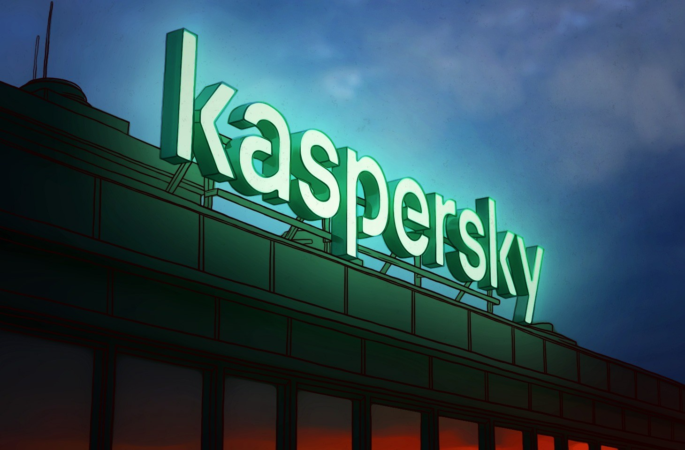

Биография
Оглавление
Оглавление

Будущий создатель знаменитого антивируса Евгений Касперский вырос в семье инженера и историка-архивиста. Благодаря победе на математической олимпиаде, он смог окончить специализированную школу-интернат при МГУ. Высшее техническое образование Евгений получил в Высшей школе КГБ, которую окончил в 1987 году. Устроившись на работу в научно-исследовательский институт при Минобороны, он разобрал код компьютерного вируса Cascade и написал свою первую антивирусную программу.
В 1991 году Евгений Касперский возглавил команду разработчиков в Центре «КАМИ». Через год они выпустили программу *AntiViral Toolkit Pro (AVP 1.0), которая первые три года не приносила прибыли. Ситуация изменилась в 1994 году, когда программа победила на конкурсе Гамбургского университета. Продукт получил международное признание, и его начали лицензировать для сторонних компаний. Продажами занялась жена Евгения — Наталья Касперская, и к 1997 году выручка достигла $1 млн.
В 1997 году Евгений Касперский, Наталья Касперская, Алексей Де-Мондерик и Вадим Богданов основали независимую компанию. По инициативе Натальи, которая стала генеральным директором, фирму назвали «Лаборатория Касперского».